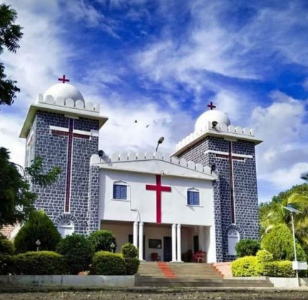

DISCOVER BIDAR
Bidar Tourist Places
Explore some of the most famous historical, religious and cultural places in Bidar.




WELCOME TO
Discover the rich history, magnificent monuments, spiritual places and cultural heritage of Bidar.
Explore BidarDISCOVER BIDAR
Explore some of the most famous historical, religious and cultural places in Bidar.

ABOUT THE CITY
Bidar is a historic city in northern Karnataka known for its magnificent monuments, rich cultural heritage, ancient architecture and important religious places.